1. Set the vehicle on a lift.
2. Disconnect the ground cable from the battery.
3. Drain transmission gear oil completely.

4. Open the front hood fully, and support with stay.
5. Remove the air intake duct and air cleaner case. (Non-turbo model)
6. Remove the air cleaner case. (Non-turbo model)
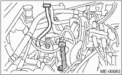
7. Remove the intercooler. (Turbo model)
8. Disconnect the following connectors and transmission cables.
(1) Neutral position switch connector
(2) Back-up light switch connector
(3) High-low switch connector (Dual range model)
• Non-turbo model
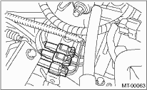
• Turbo model
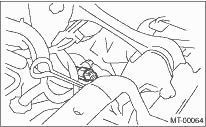
(4) Vehicle Speed Sensor
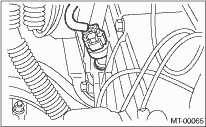
9. Remove the snap pin and pin from the drive select cable.
10. Remove the transmission drive select cable. (Dual range model)
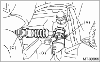
|
(A) |
Snap pin |
|
(B) |
Clevis pin |
|
(C) |
Drive select cable |
11. Remove the starter.
12. Remove the operating cylinder from the transmission, and suspend on a wire.
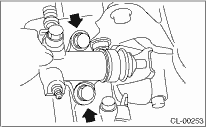
13. Remove the pitching stopper.

14. Set the ST.
| ST 41099AA010 | ENGINE SUPPORT BRACKET |
| ST 41099AA020 | ENGINE SUPPORT |
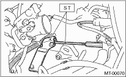
15. Remove the bolts which hold upper side of transmission to engine.
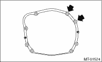
16. Remove the front and center exhaust pipes. (Non-turbo model)
17. Remove the center exhaust pipe. (Turbo model)
18. Remove the rear exhaust pipe and muffler.
CAUTION:
When removing the exhaust pipes, be careful each exhaust pipe does not drop out.
19. Remove the hanger bracket from the right side of transmission.

20. Remove the propeller shaft.
21. Remove the gear shift rod and the stay from the transmission.
(1) Disconnect the stay from the transmission.
(2) Disconnect the gear shift rod from the transmission.
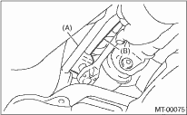
|
(A) |
Stay |
|
(B) |
Gear shift rod |
22. Remove the front vehicle height sensor.
23. Separate the stabilizer link from the transverse link.
24. Remove the bolt securing the ball joint of the transverse link to the housing, then separate the transverse link and the housing.
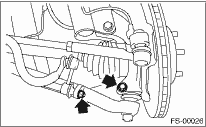
25. Using the ST, remove the front drive shaft from the transmission side.
NOTE:
• Face letters “MT” on the handle of the ST to the transmission side.
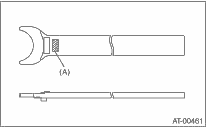
|
(A) |
Letter “MT” |
• Keep an angle so that the protrusion of the ST touches the transmission case during the operation.
| ST 28399SA000 | FRONT DRIVE SHAFT REMOVER |
26. Hold the transmission side joint (AARi) of front drive shaft by hand and extract the housing from the transmission by pressing it outside so as not to stretch the boot on the AARi side.
27. Remove the bolts and nuts which hold the lower side of the transmission to the engine.
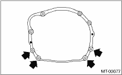
28. Place the transmission jack under the transmission.
CAUTION:
Always support the transmission case with a transmission jack.
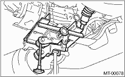
29. Remove the transmission rear crossmember from the vehicle.
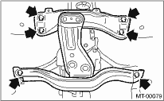
30. Tighten the turnbuckle of the ST while lowering the transmission jack, to tilt the engine assembly towards the back.
31. Remove the transmission.
NOTE:
Move the transmission jack towards the rear until the main shaft is withdrawn from the clutch disc.
32. Separate the transmission assembly from the rear cushion rubber.